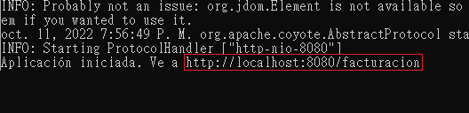
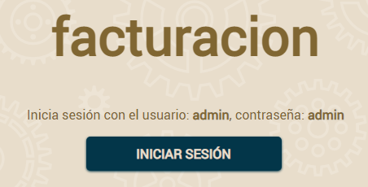
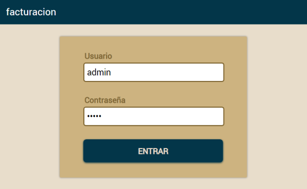
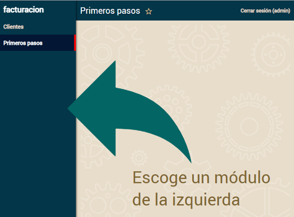

Para crear un proyecto nuevo OpenXava desde la línea de órdenes usando Maven, ingresa los siguientes comandos en Windows, Linux o Mac:
$ mvn archetype:generate -DarchetypeGroupId=org.openxava -DarchetypeArtifactId=openxava-archetype-spanish -DarchetypeVersion=RELEASE -DgroupId=com.tuempresa -DartifactId=facturacion -DinteractiveMode=false
$ cd facturacion
$ mvn package
Crear tu primera entidad
Desarrollar es muy fácil: solo has de añadir entidades para ir haciendo crecer tu aplicación. Empezaremos con una versión simplificada de
Cliente con solo
numero y
nombre.
Para esto debes crear un archivo Cliente.java dentro de la carpeta src/main/java/com/tuempresa/facturacion/modelo y escribir el código que se presenta abajo:
package com.tuempresa.facturacion.modelo;
import javax.persistence.*;
import org.openxava.annotations.*;
import lombok.*;
@Entity // Esto marca la clase Cliente como una entidad
@Getter @Setter // Esto hace los campos a continuación públicamente accesibles
public class Cliente {
@Id // La propiedad numero es la clave. Las claves son obligatorias (required) por defecto
@Column(length=6) // La longitud de columna se usa a nivel UI y a nivel DB
int numero;
@Column(length=50) // La longitud de columna se usa a nivel UI y a nivel DB
@Required // Se mostrará un error de validación si la propiedad nombre se deja en blanco
String nombre;
}
Con esto tienes el código suficiente (justo una clase) para ejecutar tu aplicación.
Ingresa los siguientes comandos, en Windows:
c:\> mvn compile
c:\> java -cp "target/facturacion/WEB-INF/classes;target/facturacion/WEB-INF/lib/*" com.tuempresa.facturacion.run.facturacion
En Linux o Mac:
$ mvn compile
$ java -cp "target/facturacion/WEB-INF/classes:target/facturacion/WEB-INF/lib/*" com.tuempresa.facturacion.run.facturacion
Espera hasta que la consola muestre un mensaje diciendo "Aplicación iniciada", como este:

Ya tienes tu aplicación ejecutándose. Para verla, abre tu navegador favorito (Chrome, Firefox, Edge o Safari) y ve a la siguiente URL:
Estás viendo tu aplicación por primera vez. Para empezar pulsa en el botón INICIAR SESIÓN:

Ahora, introduce admin/admin y pulsa en ENTRAR:

Después, pulsa en la parte de la izquierda se mostrará una lista de módulos, escoge
Clientes:

Usa el módulo
Clientes para crear nuevos clientes, simplemente introduce el número y el nombre y pulsa
Grabar.

Pulsa en
Lista para ver los clientes que has creado. Enhorabuena, tienes tu primera aplicación OpenXava funcionando.
Modificar la aplicación
A partir de ahora, desarrollar con OpenXava es muy fácil. Simplemente, escribes una clase y ya puedes ver el resultado en el navegador.
Creamos una entidad Producto a partir de un nuevo archivo Producto.java en src/main/java/com/tuempresa/facturacion/modelo y escribe el siguiente código:
package com.tuempresa.facturacion.modelo;
import javax.persistence.*;
import org.openxava.annotations.*;
import lombok.*;
@Entity @Getter @Setter
public class Producto {
@Id @Column(length=9)
int numero;
@Column(length=50) @Required
String descripcion;
}
Ahora, ejecuta de nuevo la aplicación, no olvides compilar de nuevo:
En Windows:
c:\> mvn compile
c:\> java -cp "target/facturacion/WEB-INF/classes;target/facturacion/WEB-INF/lib/*" com.tuempresa.facturacion.run.facturacion
En Linux o Mac:
$ mvn compile
$ java -cp "target/facturacion/WEB-INF/classes:target/facturacion/WEB-INF/lib/*" com.tuempresa.facturacion.run.facturacion
Ahora para ver tu nueva entidad en acción abre tu navegador y ve a la URL:
Después de identificarte con admin/admin obtendrás:

Sí, ya tienes un nuevo módulo en marcha, y solo has tenido que escribir una simple clase. Ahora puedes concentrarte en hacer crecer tu aplicación.
¿Has tenido problemas?
¡Enhorabuena! Has creado tu primera aplicación OpenXava. Si no ha sido así y has tenido algún problema con el ejemplo de arriba, pregunta en el foro:
Te ayudaremos a resolver cualquier dificultad.
Siguientes pasos
Esta guía de primeros pasos usando Maven, es la lección 1 de un curso completo de OpenXava. El resto del curso está en Eclipse y te enseñará cómo desarrollar aplicaciones empresariales con OpenXava, así como con otras tecnologías, herramientas y marcos de trabajo Java. Desarrollaremos paso a paso una aplicación completa desde cero. Se trata de una pequeña aplicación de facturación con facturas, clientes, productos y así por el estilo. Esta aplicación es una mera excusa para aprender algunos casos típicos en aplicaciones de gestión. Puedes aplicar todo lo que aprendas con esta aplicación a cualquier otra aplicación de gestión en cualquier otro dominio.
Este es el contenido del curso:
- Primeros pasos:
- Lección 1: Primeros pasos (Estás aquí)
- Modelar con Java:
- Herencia:
- Lógica de negocio básica:
- Validación avanzada:
- Refinar el comportamiento predefinido:
- Comportamiento y lógica de negocio:
- Referencias y colecciones:
- Apéndices:
Ya estás listo para pasar a la siguiente lección, sin embargo deberías considerar adquirir un poco de conocimiento base, tal como:
¿Quieres usar
IntelliJ? ¿Quieres ir contra MySQL, PostgreSQL, Oracle, Microsoft SQL Server, AS/400, Informix, Db2 o Firebird? ¿Quieres una guía de referencia detallada? Echa un vistazo a
la documentación de OpenXava, que incluye todo esto y mucho más.
¿Preparado? Ve a la lección 2